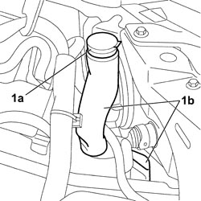

5050A14 RESERVOIR PLUG (IN ENGINE COMPARTMENT) OR WINDSCREEN WASHER FLUID LEVEL SENSOR - CHECK AND TOP UP IF NECESSARY
- Path
- Procedures > 50 AUXILIARY UNITS > 5050 SCREEN WASHERS AND HEADLAMP WASH/WIPE > 5050A WINDSCREEN AND HEADLAMP WASHER RESERVOIR > 5050A14 RESERVOIR PLUG (IN ENGINE COMPARTMENT) OR WINDSCREEN WASHER FLUID LEVEL SENSOR - CHECK AND TOP UP IF NECESSARY
- Kind
- repair procedure (removal / refitting; the operation number is the code)
- Applies to
- all engines; all production periods
- Interactive page
- https://sloeber94.github.io/elrnDB-fCrm/en/#/194000645
Applies to: all engines; all production periods
- Open the bonnet.
1. Release the windscreen washer fluid reservoir (1b) cap.
Check that the cap is not damaged and that the filter is not blocked
Check the level of the fluid.
- Close the windscreen washer fluid reservoir cap.
